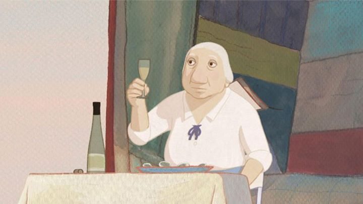

I first saw "Louise By The Shore" at the Ottawa International Animation Festival in 2016. It was an interesting and mature film, and it would go on to receive the festival's grand prize award; not too surprising as the other films that year were of average quality (although the festival would also give the honorable mention prize that year to "Cafard," a laughably horrendous effort, so my opinion of the festival's judging panel isn't particularly high). Despite the honor, the film seemed to receive little attention, so it seemed no American distributor would ever license the film for a home video release.You could imagine my surprise when I discovered it did in fact receive a English DVD release, courtesy of First Run Features, in late 2017, approximately one year after I had seen its Canadian premiere. Which is strange, because I distinctly remember looking for it every few months, and I only discovered the DVD's existance in 2018. Coincidently, the release is bare-bones, being only on DVD, and while it does include an English dub, it does NOT include the original French dub I had seen on the big screen. First Run Features seems to specialize on lesser-known indie films, and spends little to no effort marketing them or jockying for additional accolades or theatrical releases. Regardless, I was happy there existed some form for me to own "Louise By The Shore" and to watch it again. It isn't a groundbreaking work, but it has a unique story that I think will speak well to some audiences.The story takes place in a small sea-side town, typically popular with tourists during beach season. Louise is an elderly woman who lives alone in the town. The film opens during a stormy afternoon, when it is clear the townspeople are leaving due to "high-tide" sesaon. Louise too heads to the train station close to her home, but somehow (Were her house clocks wrong? Did the train leave ahead of schedule? Did it take her longer to walk to the station than she thought? The exact reason is never made clear) she misses the last train out of town. Left alone, she heads back home to wait out the storm, and when the power goes out and her basement floods, she starts exploring the abandoned town and sets up a small shelter at the edge of the beach. "Surely someone will notice and come to get me" thinks Louise. But weeks turn to months, and by the film's end, Louse will have spent an entire year fending for herself away from civilization.Despite the premise, this isn't really a traditional survival story, like Robinson Crusoe. Louise is impressively resourceful, able to forage and fish for food, and even begins to enjoy the peace and qiuet. The drama and story comes from her inner thoughts: why hasn't anyone come back for her? Has she been completely forgotten? In her old age, Louise realizes she cannot remember her close relatives she was planning to go to, and cannot remember if she had children. She begins having dreams that suggest a fascinating, if slightly disturbing, childhood (she once came across an old corpse in the woods, and would use it to play pranks on her prospective boyfriends). This take on old age, the loss of memories and no longer having an important place in society are honest themes rarely tackled in animation, the only other film coming to mind being the 2011 Spanish film "Wrinkles," which the same audience would enjoy. However, the slow pace of the film may bore some viewers, and despite the internal character drama, the whole adventure ultimately ends at the same place where it began, making it seem like there was no point to it happening at all, aside from the reassuring thought to keep living despite your inner or outer circumstances. The first thing that sticks out is the art style of the movie. While most of the animation and backgrounds are traditional 2D, often with nice painterly brush-strokes, Louise herself is animated as a 3D model. I don't think I've ever seen this before: typically, mixed-animation will use 2D main characters, with 3D backgrounds (which looks fine and allows camera movement, since the backgrounds rarely animate), and 3D far-away characters (if not in the foreground, the viewer is unlikely to notice the same stiffly-animated character duplicated in a crowd of a dozen people). 2D is simply the best way to give human characteristics to the main subjects, and so should be drawn by hand. So I have to give credit to the film's production team for the effort. Louise's movements are slow and subtle enough that this method works well enough without being distracting, and the attempt to make her character model seem 2D works well in still shots. However, all of this thought about 2D vs 3D would make more sense if the production was consistent for when it was used... some background characters and objects will be in 3D during different scenes, so the whole thing was likely the result of different artists with different skillsets being in charge of different scenes, rather than a thought-out reason to guide the style. Anyway, the painterly style, muted color palette, and occasional abstract dream-sequences all present a handsome independent film, not unlike 2016's "The Red Turtle" (also having a vaguely similar premise for that matter).The music is quite lovely, and much of the emotion of the scenes can be gathered from the music score alone. Aside from that, the entire film is voiced almost entirely by Louise's internal monologue, voiced in English by France Castel, a lesser-known French-Canadian singer and actress. It's difficult to place so much pressure on a single actress to convey the story, especially when in internal monologue that conveys an older woman telling herself how well everything is going in a straightforward manner. Perhaps this is why I found the voice acting somewhat poor, at least compared to the original slightly-better French dub starring Dominique Frot. It would also have been a great experiemnt to include a audio track with no dialogue at all, as I believe the visuals and music together convey the story and thoughts of Louise quite well on their own. Sadly, no such audio track exists to try this out."Louise By The Shore" is a mature film that will resonnate better with older audiences, particularly those around fifty-year and older. If that sounds like a good story for you to spend an afternoon with, I thnk you will be able to respect the movie for what it is.
- "Ani" More reviews can be found at : https://2danicritic.github.io/ Previous review: review_Long_Way_North Next review: review_Loups=Garous